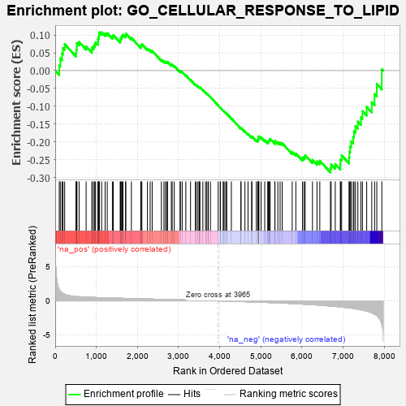
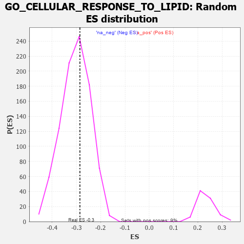

| | | Dataset | 7d |
| Phenotype | NoPhenotypeAvailable |
| Upregulated in class | na_neg |
| GeneSet | GO_CELLULAR_RESPONSE_TO_LIPID |
| Enrichment Score (ES) | -0.28570047 |
| Normalized Enrichment Score (NES) | -0.9419761 |
| Nominal p-value | 0.597146 |
| FDR q-value | 0.91815686 |
| FWER p-Value | 1.0 |
Table: GSEA Results Summary

Fig 1: Enrichment plot: GO_CELLULAR_RESPONSE_TO_LIPID
Profile of the Running ES Score & Positions of GeneSet Members on the Rank Ordered List
| PROBE | GENE SYMBOL | GENE_TITLE | RANK IN GENE LIST | RANK METRIC SCORE | RUNNING ES | CORE ENRICHMENT | | 1 | IRS1 | | | 98 | 1.659 | 0.0146 | No |
| 2 | ADCY8 | | | 124 | 1.418 | 0.0345 | No |
| 3 | AXIN1 | | | 166 | 1.159 | 0.0482 | No |
| 4 | RORB | | | 189 | 1.097 | 0.0633 | No |
| 5 | UFSP2 | | | 230 | 0.981 | 0.0742 | No |
| 6 | MYOD1 | | | 504 | 0.628 | 0.0496 | No |
| 7 | CNOT2 | | | 514 | 0.625 | 0.0587 | No |
| 8 | RWDD1 | | | 526 | 0.621 | 0.0674 | No |
| 9 | HTRA2 | | | 527 | 0.621 | 0.0775 | No |
| 10 | CCNB1 | | | 581 | 0.601 | 0.0805 | No |
| 11 | ELK1 | | | 752 | 0.545 | 0.0678 | No |
| 12 | HMGB2 | | | 892 | 0.507 | 0.0583 | No |
| 13 | HDAC5 | | | 900 | 0.506 | 0.0657 | No |
| 14 | PDCD4 | | | 941 | 0.497 | 0.0687 | No |
| 15 | CTR9 | | | 964 | 0.492 | 0.0739 | No |
| 16 | UBA5 | | | 982 | 0.488 | 0.0797 | No |
| 17 | AKT1 | | | 1040 | 0.476 | 0.0802 | No |
| 18 | YAP1 | | | 1041 | 0.475 | 0.0879 | No |
| 19 | MEF2C | | | 1054 | 0.473 | 0.0941 | No |
| 20 | FZD10 | | | 1065 | 0.470 | 0.1005 | No |
| 21 | AIFM1 | | | 1072 | 0.469 | 0.1074 | No |
| 22 | SRC | | | 1128 | 0.459 | 0.1079 | No |
| 23 | KCTD6 | | | 1213 | 0.444 | 0.1044 | No |
| 24 | CDC73 | | | 1265 | 0.436 | 0.1050 | No |
| 25 | FKBP4 | | | 1390 | 0.412 | 0.0959 | No |
| 26 | CARM1 | | | 1413 | 0.408 | 0.0998 | No |
| 27 | TADA3 | | | 1580 | 0.378 | 0.0848 | No |
| 28 | PAF1 | | | 1588 | 0.376 | 0.0900 | No |
| 29 | RNF6 | | | 1605 | 0.373 | 0.0940 | No |
| 30 | CDK4 | | | 1626 | 0.370 | 0.0975 | No |
| 31 | RXRA | | | 1647 | 0.365 | 0.1009 | No |
| 32 | DDX18 | | | 1711 | 0.355 | 0.0987 | No |
| 33 | KDM5D | | | 1716 | 0.353 | 0.1039 | No |
| 34 | TRIM5 | | | 1852 | 0.327 | 0.0921 | No |
| 35 | KDM3A | | | 2078 | 0.294 | 0.0682 | No |
| 36 | TAF7 | | | 2092 | 0.292 | 0.0713 | No |
| 37 | BMP7 | | | 2107 | 0.290 | 0.0742 | No |
| 38 | CREB1 | | | 2243 | 0.269 | 0.0614 | No |
| 39 | REST | | | 2308 | 0.259 | 0.0575 | No |
| 40 | MIF | | | 2357 | 0.252 | 0.0555 | No |
| 41 | PIAS2 | | | 2581 | 0.215 | 0.0305 | No |
| 42 | KAT5 | | | 2644 | 0.206 | 0.0260 | No |
| 43 | SASH1 | | | 2682 | 0.201 | 0.0246 | No |
| 44 | PHB2 | | | 2712 | 0.197 | 0.0241 | No |
| 45 | RORA | | | 2730 | 0.193 | 0.0251 | No |
| 46 | PCK2 | | | 2823 | 0.180 | 0.0163 | No |
| 47 | NR2E1 | | | 2844 | 0.177 | 0.0166 | No |
| 48 | FGFR2 | | | 2895 | 0.167 | 0.0130 | No |
| 49 | LEF1 | | | 3037 | 0.144 | -0.0027 | No |
| 50 | UFL1 | | | 3041 | 0.144 | -0.0007 | No |
| 51 | HDAC1 | | | 3086 | 0.138 | -0.0040 | No |
| 52 | AHR | | | 3175 | 0.126 | -0.0132 | No |
| 53 | TRIP4 | | | 3290 | 0.107 | -0.0260 | No |
| 54 | MED1 | | | 3405 | 0.089 | -0.0391 | No |
| 55 | RXRG | | | 3435 | 0.085 | -0.0414 | No |
| 56 | CNOT1 | | | 3473 | 0.081 | -0.0448 | No |
| 57 | FES | | | 3501 | 0.077 | -0.0470 | No |
| 58 | UFM1 | | | 3506 | 0.077 | -0.0462 | No |
| 59 | UBR5 | | | 3518 | 0.074 | -0.0464 | No |
| 60 | MAPK3 | | | 3589 | 0.062 | -0.0543 | No |
| 61 | FIS1 | | | 3654 | 0.051 | -0.0617 | No |
| 62 | CD180 | | | 3686 | 0.046 | -0.0649 | No |
| 63 | HSF1 | | | 3718 | 0.039 | -0.0682 | No |
| 64 | DAXX | | | 3722 | 0.038 | -0.0680 | No |
| 65 | SBNO2 | | | 3774 | 0.032 | -0.0740 | No |
| 66 | NCOR1 | | | 3961 | 0.000 | -0.0977 | No |
| 67 | RNF14 | | | 4013 | -0.010 | -0.1040 | No |
| 68 | PARP1 | | | 4014 | -0.010 | -0.1038 | No |
| 69 | WNT2 | | | 4084 | -0.021 | -0.1123 | No |
| 70 | PDE4B | | | 4089 | -0.022 | -0.1124 | No |
| 71 | ABL1 | | | 4125 | -0.027 | -0.1165 | No |
| 72 | DDX17 | | | 4161 | -0.035 | -0.1204 | No |
| 73 | GFI1 | | | 4168 | -0.037 | -0.1205 | No |
| 74 | WNT11 | | | 4282 | -0.056 | -0.1340 | No |
| 75 | SNW1 | | | 4514 | -0.096 | -0.1619 | No |
| 76 | WNT5B | | | 4517 | -0.098 | -0.1605 | No |
| 77 | ADTRP | | | 4612 | -0.120 | -0.1706 | No |
| 78 | PTK7 | | | 4687 | -0.136 | -0.1778 | No |
| 79 | PIM1 | | | 4776 | -0.152 | -0.1865 | No |
| 80 | WBP2 | | | 4780 | -0.153 | -0.1844 | No |
| 81 | CLU | | | 4889 | -0.174 | -0.1953 | No |
| 82 | CBX3 | | | 4923 | -0.183 | -0.1966 | No |
| 83 | CASP1 | | | 4932 | -0.185 | -0.1946 | No |
| 84 | FZD4 | | | 4940 | -0.186 | -0.1924 | No |
| 85 | EP300 | | | 4941 | -0.186 | -0.1894 | No |
| 86 | XRCC5 | | | 4946 | -0.187 | -0.1868 | No |
| 87 | CHMP5 | | | 4952 | -0.188 | -0.1844 | No |
| 88 | KLF4 | | | 5005 | -0.198 | -0.1878 | No |
| 89 | DDX54 | | | 5093 | -0.222 | -0.1953 | No |
| 90 | TBX1 | | | 5166 | -0.241 | -0.2005 | No |
| 91 | HDAC6 | | | 5183 | -0.244 | -0.1986 | No |
| 92 | SMO | | | 5195 | -0.247 | -0.1960 | No |
| 93 | ATM | | | 5210 | -0.249 | -0.1937 | No |
| 94 | TMF1 | | | 5225 | -0.251 | -0.1914 | No |
| 95 | TCF21 | | | 5340 | -0.283 | -0.2013 | No |
| 96 | LMO3 | | | 5342 | -0.283 | -0.1968 | No |
| 97 | LATS1 | | | 5412 | -0.298 | -0.2007 | No |
| 98 | CPT1A | | | 5467 | -0.311 | -0.2025 | No |
| 99 | VDR | | | 5517 | -0.325 | -0.2035 | No |
| 100 | TLR2 | | | 5761 | -0.395 | -0.2280 | No |
| 101 | STRN3 | | | 5849 | -0.417 | -0.2323 | No |
| 102 | XBP1 | | | 6011 | -0.475 | -0.2451 | No |
| 103 | NR2E3 | | | 6048 | -0.488 | -0.2417 | No |
| 104 | CALR | | | 6077 | -0.499 | -0.2372 | No |
| 105 | TFAP4 | | | 6254 | -0.556 | -0.2505 | No |
| 106 | NPC1 | | | 6364 | -0.602 | -0.2546 | No |
| 107 | MALT1 | | | 6432 | -0.634 | -0.2528 | No |
| 108 | PAK1 | | | 6691 | -0.757 | -0.2734 | Yes |
| 109 | EGFR | | | 6708 | -0.765 | -0.2629 | Yes |
| 110 | ADAM9 | | | 6808 | -0.819 | -0.2622 | Yes |
| 111 | LRP8 | | | 6931 | -0.889 | -0.2633 | Yes |
| 112 | GHSR | | | 6937 | -0.894 | -0.2493 | Yes |
| 113 | DNM1L | | | 6963 | -0.913 | -0.2376 | Yes |
| 114 | CFTR | | | 7143 | -1.030 | -0.2436 | Yes |
| 115 | DDX5 | | | 7152 | -1.037 | -0.2277 | Yes |
| 116 | AR | | | 7169 | -1.046 | -0.2127 | Yes |
| 117 | TSPO | | | 7194 | -1.065 | -0.1984 | Yes |
| 118 | ABCA1 | | | 7243 | -1.113 | -0.1864 | Yes |
| 119 | PLPP1 | | | 7262 | -1.135 | -0.1701 | Yes |
| 120 | MSX2 | | | 7299 | -1.171 | -0.1556 | Yes |
| 121 | WDR35 | | | 7357 | -1.225 | -0.1429 | Yes |
| 122 | KMO | | | 7432 | -1.308 | -0.1310 | Yes |
| 123 | SHPK | | | 7469 | -1.360 | -0.1134 | Yes |
| 124 | LITAF | | | 7572 | -1.511 | -0.1018 | Yes |
| 125 | ADCY1 | | | 7695 | -1.752 | -0.0888 | Yes |
| 126 | PDE4D | | | 7764 | -1.944 | -0.0657 | Yes |
| 127 | TRAF6 | | | 7818 | -2.157 | -0.0373 | Yes |
| 128 | MRC1 | | | 7940 | -3.475 | 0.0040 | Yes |
Table: GSEA details [plain text format]

Fig 2: GO_CELLULAR_RESPONSE_TO_LIPID: Random ES distribution
Gene set null distribution of ES for GO_CELLULAR_RESPONSE_TO_LIPID